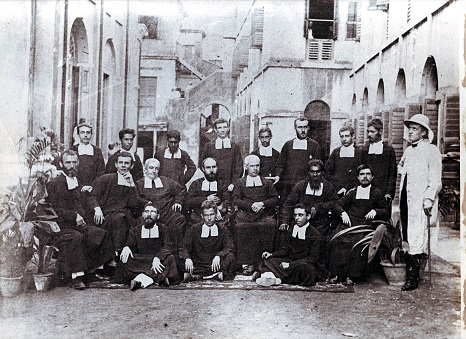
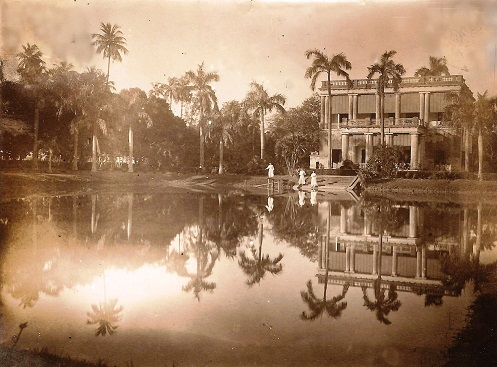

HISTORY OF ST. MARY'S ORPHANAGE AND DAY SCHOOL

St. Mary's Orphanage traces its origin to the Catholic Male Orphanage (C.M.O.) which was established in 1848 at Murghihatta. In order to remove all doubts about its origin let us go back a few years before 1848 when it first began its great work for the poor of Calcutta.In this way we shall be able to connect the past with the present and establish for St. Mary's the heritage which is hers. In 1840, Dr. Patrick Joseph Carew, Vicar Apostolic of Bengal, an Irish Jesuit, realized that the future of the Church in Bengal rested in its youth and he very soon turned his attention to the education of the boys of Calcutta, particularly the poor.
His one wish was that the Orphanage and schools be put under the management of a Congregation of Brothers. The Superior General of the Christian Brothers - Br. Michael Paul Riordan sent two men Patrick Fitzpatrick and his cousin Thomas Tolan trained as Brothers in Ireland. They arrived on February 15th 1848. They were known as Brs. Xavier and Alphonsus, these two good Brot hers set to work almost immediately. Br. Xavier Fitzpatrick took charge of the Orphanage, then known as the Cathedral school, Moorghyatta, while Br. Alphonsus Tolan ran the boys' school in Bow Bazar Street. They were known as the Calcutta Brothers. In 1878 they tried to amalgamate with the De La Salle Brothers. In the year 1878 Dr. Count Goethals, up to then Provincial of the Jesuit Belgian Province, was appointed as Archbishop of Calcutta. He advised the Calcutta Brothers to join a larger Congregation, but left the choice to themselves. Their response was almost immediate and they expressed a desire to join up with the Irish Christian Brothers as they followed the Rules and traditions of that Order.
Brs. Edward Vincent Casey, Provincial Visitor, Timothy Fabian Kennealy, Joseph Edward Aherne and John Ambrose Flynn these four Brothers arrived in Calcutta on the 6th of January, 1890, and Br. Vincent Casey took over charge of the Orphanage which some time before had changed its name from the Cathedral School to the Catholic Male Orphanage. Within a short time of his arrival, Br. Vincent assembled all the Brothers in the oratory at Dum Dum and explained the idea of the amalgamation to them, together with the Superior-General's directions and the decree from Rome. All eighteen agreed and accepted the amalgamation ("Fifty years in India")
The first suggestion to close down the C.M.O. (Murgihatta- Howrah) and move elsewhere came in 1916 when the Calcutta Improvement Trust announced that it was taking over the compound. Br. Gilbert Cooney, Provincial's idea was to transfer the Orphanage to Asansol and build it where St. Vincent's Technical and High School now stands. This plan did not work out. However in 1941 things began to move once more, the original plans were changed and this time the C.M.O. was to be moved to Dum Dum.
The property at Dum Dum was purchased by Archbishop Carew in 1853 and handed over to the Calcutta Brothers. It was known as St. Xavier's Retreat. For many years the Brothers used it as a retreat house and for weekly holiday picnics. Under Br. J. B. Culhane, then Provincial, the Villa was pulled down and the foundations for a two storeyed building were laid. The tanks were filled and construction work began. In the year 1943, the work was decided to stop due to financial reasons and the building work had reached the first floor and the wall-consturction for the roof. About this time a Redemptorist, Father Greene preached a Retreat to the students of St. Joseph's College, Calcutta. He heard of the problem and suggested that a Mass be offered in honour of Our Lady of Perpetual Succour with a promise to name the school after our Lady. From the day the Mass was offered everything worked out smoothly. The United States Army, then newly arrived in Calcutta, was approached, and the Engineer section agreed to start the work at once and finish the building according to the plan, provided the premises would be available for the use during the period of the war and for six months after the cessation of hostilities. Work began in 1943 finished satisfactorily in July and the Troops moved in August 1943. As many as 1,200 men were at various times housed in the school. Now it had all the appearance of an armed camp. The property was handed back to the Brothers in 1946. Credit for the plan and execution of the major portion of the work goes to Br. J. B. Culhane assisted by Br. P.F. McCarthy who for 2 years spent strenuous days in Dum Dum. Both had the satisfaction of seeing the building completed according to plan.
In June, 1947, riots began. The work at C.M.O. during the last ninety-nine years was uprooted in a matter of days. The transport was supplied free by a Mr. Hildreth. Two Brothers and about ten or twelve of the bigger and stronger orphans helped to load the trucks.. The small boys also did their bit by removing whatever they could carry. Br. D. E. Hayes with his mechanical bent made short work of all heavy furniture by means of the lever and pulley system. By about the 12th June the transfer was complete and the old C.M.O. was just a shell, stripped of everything from school equipment and beds etc. down to the piping and fittings in the bathing room. The old C.M.O. was gone and so was the Cathedral School and from their roots sprang SMO- St. Mary's Orphanage, Dum Dum.
CAMPUS


MOVING INTO A NEW FUTURE


Over the years, SMO has been home to hundreds of children, both boarders and day scholars. Our students have been a part of a tradition that makes men out of boys who come into our care. We aim at creating an environment where its members work together in harmony to bring forth a sustainable global society founded on respect for nature, universal human rights, economic justice and a culture of peace. Faith formation and value education form an essential part of the school curriculum.
St. Mary's aims at all round development of the students so that they can grow into balanced, responsible, conscious and caring adults. Sports, Concert, SUPW, Co-curricular activities form an integral part of the school curriculum.
The school is committed to respecting the dignity of each student, accepting the differences, valuing their potential and preparing them for their vocational role in life.